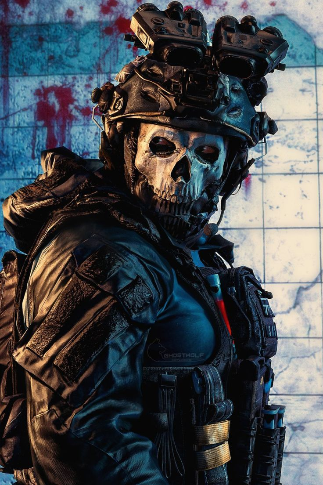
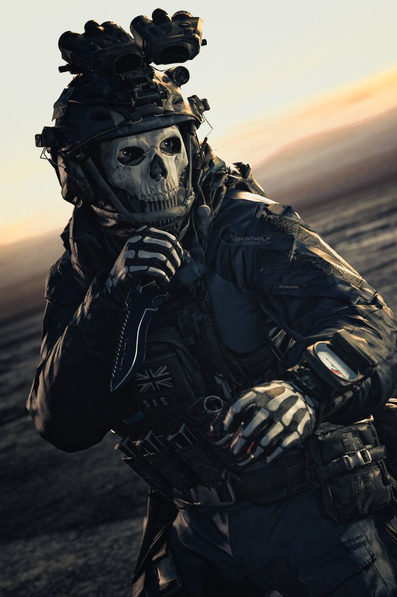
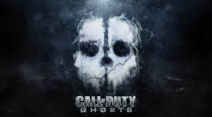

About Ghost
Ghost, also known as Simon Riley, is a character in the Call of Duty series. He is known for his iconic skull mask and stealthy tactics.
See more!Gallery
 Videos
History of Ghost - Call of Duty
Introduction and First Appearance
Ghost, whose full name is Simon Riley, first appeared in Call of Duty: Modern Warfare 2. Known for his iconic skull-patterned balaclava and dark sunglasses, Ghost quickly became a fan-favorite character.
Background Story
Simon Riley, nicknamed Ghost, was a British special forces operative and a member of Task Force 141. His dark past and skills as a soldier make him one of the most intriguing characters in the series.
Key Moments in the Series
Ghost played a significant role in several key missions throughout Modern Warfare 2. His tragic death at the hands of General Shepherd is one of the most memorable and heartbreaking moments in the game.
Popularity and Impact
The character of Ghost has left a lasting impact on the Call of Duty franchise. His mysterious persona and striking appearance have inspired numerous fans, cosplays, and even led to his return in Call of Duty: Modern Warfare (2019).
Ghost in Action
Visit callofduty.com!
this website © 2023 is based on w4rner's
'Ninety Five' template after Tamara Munzner's and therefore is licensed under CC BY-SA 4.0